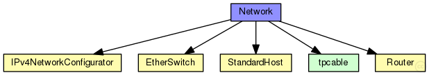

This documentation is released under the Creative Commons license
This documentation is released under the Creative Commons license(no description)

The following diagram shows usage relationships between types. Unresolved types are missing from the diagram.
The following diagram shows inheritance relationships for this type. Unresolved types are missing from the diagram.

| Name | Value | Description |
|---|---|---|
| isNetwork | ||
| display | bgb=1092,602,white |
| Name | Type | Default value | Description |
|---|---|---|---|
| HostA.status.initialStatus | string | "UP" |
TODO @signal, @statistic |
| HostA.routingTable.forwarding | bool | ||
| HostA.routingTable.multicastForwarding | bool | ||
| HostA.interfaceTable.displayAddresses | bool | true |
whether to display IP addresses on links |
| HostA.pcapRecorder.verbose | bool | false |
whether to log packets on the module output |
| HostA.pcapRecorder.pcapFile | string | "" |
the PCAP file to be written |
| HostA.pcapRecorder.snaplen | int | 65535 |
maximum number of bytes to record per packet |
| HostA.pcapRecorder.dumpBadFrames | bool | true |
enable dump of frames with hasBitError |
| HostA.pcapRecorder.moduleNamePatterns | string | "wlan[*] eth[*] ppp[*] ext[*]" |
space-separated list of sibling module names to listen on |
| HostA.pcapRecorder.sendingSignalNames | string | "packetSentToLower" |
space-separated list of outbound packet signals to subscribe to |
| HostA.pcapRecorder.receivingSignalNames | string | "packetReceivedFromLower" |
space-separated list of inbound packet signals to subscribe to |
| HostA.pcapRecorder.alwaysFlush | bool | false |
flush the pcapFile after each write to ensure that all packets are captured in case of a crash |
| HostA.lo0.lo.interfaceTableModule | string |
The path to the InterfaceTable module |
|
| HostA.lo0.lo.mtu | int | 4470B | |
| HttpServerA.status.initialStatus | string | "UP" |
TODO @signal, @statistic |
| HttpServerA.routingTable.forwarding | bool | ||
| HttpServerA.routingTable.multicastForwarding | bool | ||
| HttpServerA.interfaceTable.displayAddresses | bool | true |
whether to display IP addresses on links |
| HttpServerA.pcapRecorder.verbose | bool | false |
whether to log packets on the module output |
| HttpServerA.pcapRecorder.pcapFile | string | "" |
the PCAP file to be written |
| HttpServerA.pcapRecorder.snaplen | int | 65535 |
maximum number of bytes to record per packet |
| HttpServerA.pcapRecorder.dumpBadFrames | bool | true |
enable dump of frames with hasBitError |
| HttpServerA.pcapRecorder.moduleNamePatterns | string | "wlan[*] eth[*] ppp[*] ext[*]" |
space-separated list of sibling module names to listen on |
| HttpServerA.pcapRecorder.sendingSignalNames | string | "packetSentToLower" |
space-separated list of outbound packet signals to subscribe to |
| HttpServerA.pcapRecorder.receivingSignalNames | string | "packetReceivedFromLower" |
space-separated list of inbound packet signals to subscribe to |
| HttpServerA.pcapRecorder.alwaysFlush | bool | false |
flush the pcapFile after each write to ensure that all packets are captured in case of a crash |
| HttpServerA.lo0.lo.interfaceTableModule | string |
The path to the InterfaceTable module |
|
| HttpServerA.lo0.lo.mtu | int | 4470B | |
| RouterA.status.initialStatus | string | "UP" |
TODO @signal, @statistic |
| RouterA.routingTable.forwarding | bool | ||
| RouterA.routingTable.multicastForwarding | bool | ||
| RouterA.interfaceTable.displayAddresses | bool | true |
whether to display IP addresses on links |
| RouterA.pcapRecorder.verbose | bool | false |
whether to log packets on the module output |
| RouterA.pcapRecorder.pcapFile | string | "" |
the PCAP file to be written |
| RouterA.pcapRecorder.snaplen | int | 65535 |
maximum number of bytes to record per packet |
| RouterA.pcapRecorder.dumpBadFrames | bool | true |
enable dump of frames with hasBitError |
| RouterA.pcapRecorder.moduleNamePatterns | string | "wlan[*] eth[*] ppp[*] ext[*]" |
space-separated list of sibling module names to listen on |
| RouterA.pcapRecorder.sendingSignalNames | string | "packetSentToLower" |
space-separated list of outbound packet signals to subscribe to |
| RouterA.pcapRecorder.receivingSignalNames | string | "packetReceivedFromLower" |
space-separated list of inbound packet signals to subscribe to |
| RouterA.pcapRecorder.alwaysFlush | bool | false |
flush the pcapFile after each write to ensure that all packets are captured in case of a crash |
| RouterA.lo0.lo.interfaceTableModule | string |
The path to the InterfaceTable module |
|
| RouterA.lo0.lo.mtu | int | 4470B | |
| RouterA.bgp.interfaceTableModule | string |
The path to the InterfaceTable module |
|
| RouterA.bgp.routingTableModule | string | ||
| RouterA.bgp.ospfRoutingModule | string | hasOSPF ? "^.ospf" : "" | |
| RouterA.bgp.dataTransferMode | string | ||
| RouterM.status.initialStatus | string | "UP" |
TODO @signal, @statistic |
| RouterM.routingTable.forwarding | bool | ||
| RouterM.routingTable.multicastForwarding | bool | ||
| RouterM.interfaceTable.displayAddresses | bool | true |
whether to display IP addresses on links |
| RouterM.pcapRecorder.verbose | bool | false |
whether to log packets on the module output |
| RouterM.pcapRecorder.pcapFile | string | "" |
the PCAP file to be written |
| RouterM.pcapRecorder.snaplen | int | 65535 |
maximum number of bytes to record per packet |
| RouterM.pcapRecorder.dumpBadFrames | bool | true |
enable dump of frames with hasBitError |
| RouterM.pcapRecorder.moduleNamePatterns | string | "wlan[*] eth[*] ppp[*] ext[*]" |
space-separated list of sibling module names to listen on |
| RouterM.pcapRecorder.sendingSignalNames | string | "packetSentToLower" |
space-separated list of outbound packet signals to subscribe to |
| RouterM.pcapRecorder.receivingSignalNames | string | "packetReceivedFromLower" |
space-separated list of inbound packet signals to subscribe to |
| RouterM.pcapRecorder.alwaysFlush | bool | false |
flush the pcapFile after each write to ensure that all packets are captured in case of a crash |
| RouterM.lo0.lo.interfaceTableModule | string |
The path to the InterfaceTable module |
|
| RouterM.lo0.lo.mtu | int | 4470B | |
| RouterM.bgp.interfaceTableModule | string |
The path to the InterfaceTable module |
|
| RouterM.bgp.routingTableModule | string | ||
| RouterM.bgp.ospfRoutingModule | string | hasOSPF ? "^.ospf" : "" | |
| RouterM.bgp.dataTransferMode | string | ||
| SwitchA1.status.initialStatus | string | "UP" |
TODO @signal, @statistic |
| SwitchA1.l2NodeConfigurator.interfaceTableModule | string | ||
| SwitchA1.l2NodeConfigurator.l2ConfiguratorModule | string | "l2NetworkConfigurator" |
the absolute path to the L2NetworkConfigurator; use "" if there is no configurator |
| SwitchA1.interfaceTable.displayAddresses | bool | true |
whether to display IP addresses on links |
| SwitchA1.macTable.agingTime | double | ||
| SwitchA1.macTable.addressTableFile | string | ||
| SwitchA1.stp.helloTime | double | ||
| SwitchA1.stp.forwardDelay | double | ||
| SwitchA1.stp.maxAge | double | ||
| SwitchA1.stp.bridgePriority | int | ||
| SwitchA1.stp.visualize | bool | ||
| SwitchA2.status.initialStatus | string | "UP" |
TODO @signal, @statistic |
| SwitchA2.l2NodeConfigurator.interfaceTableModule | string | ||
| SwitchA2.l2NodeConfigurator.l2ConfiguratorModule | string | "l2NetworkConfigurator" |
the absolute path to the L2NetworkConfigurator; use "" if there is no configurator |
| SwitchA2.interfaceTable.displayAddresses | bool | true |
whether to display IP addresses on links |
| SwitchA2.macTable.agingTime | double | ||
| SwitchA2.macTable.addressTableFile | string | ||
| SwitchA2.stp.helloTime | double | ||
| SwitchA2.stp.forwardDelay | double | ||
| SwitchA2.stp.maxAge | double | ||
| SwitchA2.stp.bridgePriority | int | ||
| SwitchA2.stp.visualize | bool | ||
| configurator.minLinkWeight | double | 1E-3 | |
| configurator.config | xml | xml(" |
XML configuration parameters for IP address assignment and adding manual routes |
| configurator.assignAddresses | bool | true |
assign IP addresses to all interfaces in the network |
| configurator.assignDisjunctSubnetAddresses | bool | true |
avoid using the same address prefix and netmask on different links when assigning IP addresses to interfaces |
| configurator.addStaticRoutes | bool | true |
add static routes to the routing tables of all nodes to route to all destination interfaces (only where applicable; turn off when config file contains manual routes) |
| configurator.addDefaultRoutes | bool | true |
add default routes if all routes from a source node go through the same gateway (used only if addStaticRoutes is true) |
| configurator.addSubnetRoutes | bool | true |
add subnet routes instead of destination interface routes (only where applicable; used only if addStaticRoutes is true) |
| configurator.optimizeRoutes | bool | true |
optimize routing tables by merging routes, the resulting routing table might route more packets than the original (used only if addStaticRoutes is true) |
| configurator.dumpTopology | bool | false |
print extracted network topology to the module output |
| configurator.dumpLinks | bool | false |
print recognized network links to the module output |
| configurator.dumpAddresses | bool | false |
print assigned IP addresses for all interfaces to the module output |
| configurator.dumpRoutes | bool | false |
print configured and optimized routing tables for all nodes to the module output |
| configurator.dumpConfig | string | "" |
write configuration into the given config file that can be fed back to speed up subsequent runs (network configurations) |
network Network { @display("bgb=1092,602,white"); types: channel tpcable extends DatarateChannel { parameters: delay = 0.1us; datarate = 100Mbps; } submodules: HostA: StandardHost { parameters: @display("p=130,527"); gates: ethg[1]; } HttpServerA: StandardHost { parameters: @display("p=99,242"); gates: ethg[1]; } RouterA: Router { parameters: @display("p=130,365"); gates: ethg[2]; } RouterM: Router { parameters: @display("p=558,97"); gates: ethg[4]; } SwitchA1: EtherSwitch { parameters: @display("p=130,436"); gates: ethg[2]; } SwitchA2: EtherSwitch { parameters: @display("p=242,241"); gates: ethg[3]; } configurator: IPv4NetworkConfigurator { parameters: @display("p=50,21"); } connections: SwitchA1.ethg[0] <--> tpcable <--> HostA.ethg[0]; SwitchA1.ethg[1] <--> tpcable <--> RouterA.ethg[0]; SwitchA2.ethg[0] <--> tpcable <--> RouterM.ethg[0]; SwitchA2.ethg[1] <--> tpcable <--> HttpServerA.ethg[0]; SwitchA2.ethg[2] <--> tpcable <--> RouterA.ethg[1]; }
This documentation is released under the Creative Commons license